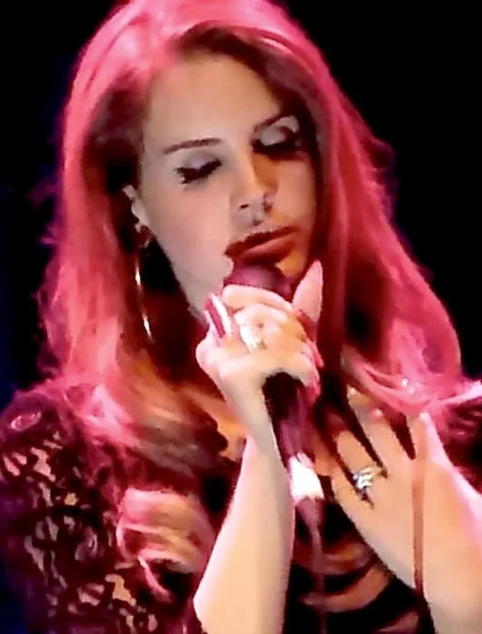

01 / music & style
Lana Del Rey
Lana Del Rey inspires me because her vintage Americana incorporates 1950s and 1960s fashion, while her music focuses on real-life struggles. I love the meaning of her songs and her calm, elegant singing style, which matches the colour themes of her album covers.
Lust for Life feels soft and elegant, yet still explores struggles while keeping an upbeat mood. I find this balance in her other albums too, including Norman F***ing Rockwell!, Born to Die, and Did You Know That There's a Tunnel Under Ocean Blvd.
While Did You Know That There's a Tunnel Under Ocean Blvd keeps an elegant, upbeat style, it focuses more deeply on personal struggles. By bringing personal scenarios into the open, it helps listeners feel heard and seen, which makes me feel connected to this artist.